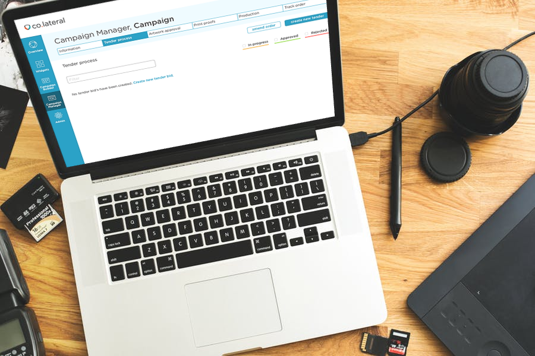

Full-stack development, Swoop Applications, 2018
Co.lateral
Co.lateral is sophisticated, workflow and management solution for in-store marketing campaigns for large national and international retailers.
I'm involved in the full-stack development of this complex web application as part of my role at Swoop Applications.
My main contributions to this project include rolling out a front-end permissions framework and writing a large portion of the automated test suite.
Skills used include: Javascript, ES6, React, Redux, Node.js and Koa.js
Find out more on the Swoop website
